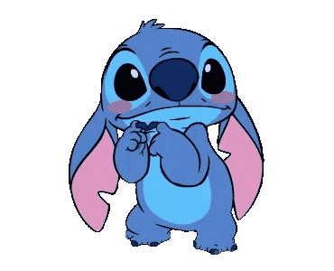
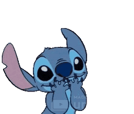

Doğum Günün Kutlu Olsunn BEYZAAA! 💖
Tahmin edebileceğin gibi, bu senin için hazırladığım küçük bir kaçış molası. Lütfen acele etme. Bu, sadece senin huzurun için.
Hadi, biraz ilerle.
Bir Dilek Tutma Zamanı 🎂

May all your biggest dreams come true. (En büyük hayallerin gerçek olsun.)
Umarım bu yıl tüm dileklerin gerçekleşir. Biliyorum, o dileklerin arasında kariyer hedeflerin ve huzur var.
Önce Huzur, Sonra Mesaj 🎧
Biliyorum, şu an odaklanman gereken çok önemli işlerin var. Bu yüzden, mesajımı okumaya başlamadan önce "sana en iyi gelen müziğini" seçebilirsin.
Huzur Müziği Seçimi (Kontrol Sende)
1. En Tercih Edilen Bu: New West - Those Eyes
2. Arctic Monkeys - I Wanna Be Yours
3. Cigarettes After Sex - Apocalypse
4. Beach Weather - sex, drugs, etc
**Önemli Not:** Müziğin tamamını dinleyebilirsin. Butona basarak başlatabilir, aynı butona basarak duraklatabilirsin.
Sınırların, Benim Saygım ve Bir İtiraf
Evet, ilk buluştuğumuzda ya da konuşmamızda bana "derslerimi önemsemek zorundayım" demiştin. Ben de evet zaten ilk derslerine odaklan sonra devam ederdik demiştim. Bunu baya düşünmüştüm. Sınav zamanı geldiğinde 3-4 hafta buluşamayacağımızı, senin baya meşgul olacağını biliyordum ve gördüm. (Ama "beklemeye değerdi.")
Ben savaşmaya hazırdım, desteklemeye hazırdım. İhtiyacın olduğunda, modun düşük olduğunda arkanda olacaktım. (**Hatırlıyorum, ayrılırken bana 'sen üzülceksin' demiştin.** Ama ben sana, **'bırak ben üzüleyim, sen üzülme'** demek istedim.) Seni cidden mutlu edeceğimi de biliyordum.
İlişkimizin, senin o yoğun sınav stresin ve kariyer hedefinle aynı zamana denk gelmesi bir talihsizlikti. O gün bana 'sorunun benlik olduğunu, bu dönemde ilişki yürütmek istemediğini' söylediğinde, senin dürüstlüğüne olan saygım daha da arttı.
Bu yüzden, hemen o günlerde seni rahatsız ettiğim için özür dilerim. İlk gerçek sevgilimdin; kaybetmek istememiştim. Hata yaptım. Bu hatanın telafisi ise senin sınırlarına saygı duymaktır.
Benim sessizliğim, sana olan ilgisizliğim değil, **sınırlarına duyduğum en büyük saygıdır.**
Evet, bunları belki ayrıldığımızda daha önce söylemişimdir ama "yine de söylemek istedim." Umarım bunları okuyunca tekrar senin aklında olurum. Çok özür dilerim, ama doğum günün yani sonuçta. Umarım fikrin değişirse, tekrar ilişki istersen seni bekleyeceğim. Ben de beklerken kendime odaklanmış olurum bir yandan.
SANA OLAN SONSUZ SÖZLERİM VE SARSILMAZ İNANCIM
Şu an aramızdaki mesafeye rağmen, sana karşı olan **hislerimin ve bağlılığımın değişmediğini** bilmeni istiyorum. Bu, senin hırslarına ve hedeflerine duyduğun **derin saygıdan** geliyor.
Hatta gözlerine baktığımda bana **güven veriyor, huzur veriyor**, sanki **evdeymişim gibi** hissettiriyor. **(Ve o güzel enerjin de aynı.)** Bu yüzden ben de senin için en güvenilir liman olmak istiyorum.
**Sana olan dürüstlüğümün son kanıtı:** Biliyorum, daha önce bahsetmedim ama bende düşük seviyede Disleksi (okuduğumu anlama ve matematik) ve hafif ADHD belirtileri var. Bu, genel hayatımı etkilemiyor; ancak ders çalışırken aşırı stres yaratıyor ve ondan dolayı ders çalışmayı pek sevmiyorum. **(Hani kedilerin anlattığı komik Reels vardı ya, işte o benim durumumu özetliyor. Link burada.)** Ayrıca, Avrupa'dan sadece babam yüzünden değil, hayatıma dair başka önemli sebeplerden dolayı da döndüğümü sana ilk defa söylüyorum. Bu detaylar, benim hayatımı yönetmeyi öğrenmemi ve her zaman daha dikkatli olmamı gerektirdi. Bu, seni sevmemi veya sana olan bağlılığımı asla etkilemeyen, sadece benim bir parçam olan küçük detaylar.
Benim gibi biriyle, yani **senin için cidden savaşan ve uğraşan bir partneri** belki hayatında ilk defa görüyorsun. **Senin için en değerli olanı anlıyorum: Kendi varlıklarımızı koruyarak 1+1=11 olabilmek.** Ben de seninle kendi benliğimizi kaybetmeden, birbirimizi büyüterek, **gerçekten bir gelecek görüyorum.**
Belki gözünde boşuna uğraşıyorumdur, ama sana dürüst olmalıyım: **Benim gibi birinin senin hayatından bir daha ne zaman geçeceğini bilmiyorsun.**
Biliyorum, sen ayrılık kararını alırken haklıydın. **Hatırlıyorum, o gün bana 'benim yüzümden buluşamıyoruz' demiştin.** Hatta o gün bana **'sen üzüleceksin'** demiştin. Ancak sana karşı tek bir pişmanlığım var: Keşke ayrılmak yerine, bu zorlu sürece uygun bir kural koysaydık. Çünkü şunu bilmeni isterim: **Seni sevip öpemiyordum belki, ama yazışmak, görüntülü konuşmak bile benim için yeterliydi, bütün dertlerimi alıp götürüyordu.** Senin sınavın için ne kadar zaman gerekse, ben o kadar beklemeye hazırdım; bir ay bile benim için sorun değildi. Bu, benim takıntılı bağlılığımın bir parçası. Ama endişelenme, bu bekleme, senin hedeflerine olan saygımdan geliyor.
Keşke bugün yanında olabilsem. Ama biliyorum ki, bu, senin sınav sürecinde duygusal bir yük yaratmaktan başka bir işe yaramazdı. Sana olan tüm saygımdan dolayı, bu mesafeyi korudum. Bu, sadece senin huzurun için.
**Unutmadım, biliyorsun.** Hani 18 olduğunda, bara ilk defa benimle gidersin demiştik ya... O gün geldiğinde, o anımızı birlikte yaşayacağız. Ne zaman istersen, ne zaman senin için doğru olursa, ben hazırım.
Sınavın bittiğinde, ilk tanıştığımız zamanki gibi **istediğin kadar Reels atabilirsin.** O günlere geri dönmeyi dört gözle bekliyorum.
Sana o nefes alan Stitch peluşu almak istedim, çünkü Instagram Reels'te gördüm ve beğendiğini biliyordum. Ama buluşup da sınav stresini artırmak, sana duygusal bir baskı yapmak istemedim. O yüzden sadece bu siteyi yaptım.
1 ay birlikteydik. O 1 aylık süreçte bile hemen seninle evlenirdim, o kesindi. :)
Biliyorum, ilişkimiz tartışma veya kavga aşamasına hiç gelmedi; ne sen benim o yanımı gördün, ne de ben senin. Ama sana dürüst olmalıyım: O yanlarını görmüş olsam bile, seni seveceğimden ve sana bağlı kalacağımdan eminim. Benim sana olan inancım o kadar sarsılmazdı.
Senin o derslerine gösterdiğin inanılmaz disiplin, hedeflerin ve kararlılığınla tarif edilemez derecede gurur duyuyorum. Benim bu bekleyişim, sadece sana duyduğum bu koşulsuz gururla birlikte. Ve şunu bilmeni isterim ki, ben seninle sadece bir gelecek hayal etmedim, o geleceğe inanıyorum. Seninle cidden gurur duyduğumu bilmeni isterim, Beyza.
Benim için esas olan, her zaman senin arkanda durmaktır. Söz veriyorum; ben, senin bu zorlu mücadeledeki en sağlam, **güvenebileceğin ve ağlayabileceğin bir omuz** olmak istiyorum.
Biliyorum, etrafında güvendiğin yakın arkadaşların var. Ama şunu da bil ki, **cidden büyük bir derdin olursa, acil bir durum yaşarsan ya da sadece kendini yalnız hissedersen, aramaktan ya da yazmaktan hiç çekinme.** **Overthinking yaparsan da beni arayabilirsin.** Ben her zaman ulaşılabilirim ve seni dinlemeye hazırım.
Sınav baskın azaldığında ya da YKS sonrası **hazır hissettiğinde**, benim burada olacağımı biliyorsun. **Senin için her zaman beklemeye değerim.** Eğer o gün gelirse, birbirimizi hiç tanışmamış gibi her şeye sıfırdan başlayarak bir şans daha verebiliriz.
Hayat seni benden başka bir yere götürürse ve bir başkası girerse hayatına, emin ol ki buna da **en büyük saygıyı göstereceğim.**
Ama şunu bil ki, ben senden başkasını istemiyorum. Benim için beklemeye değer olan tek kişi sensin.
Aslında sana anlatmak istediğim daha çok şey vardı, ama zamanını almamak adına onlar şimdilik bende kalsın. Umarım bu jest, omuzlarındaki baskıyı az da olsa hafifletmiştir. Tekrar iyi ki doğdun, Beyza. **Kendine çok dikkat et.** Görüşmek üzere.
- Love Yiğit (Spiderman)
